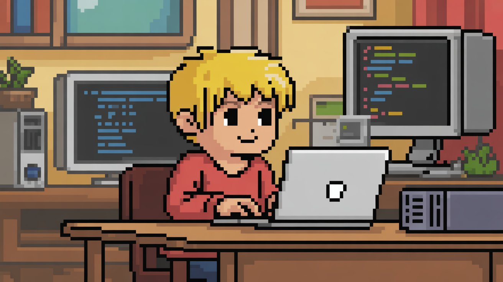
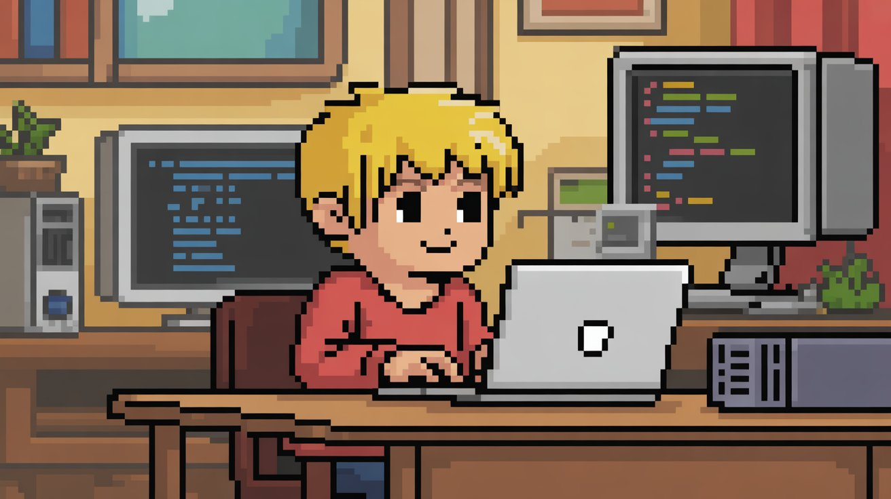

Bienvenido a Focus X
Una interfaz modular, minimalista y creada con SASS.
Diseño limpio
Mantén tu código y estilo ordenado con una estructura escalable.
100% Modular
Trabaja con componentes reutilizables desde el día uno.
Una interfaz modular, minimalista y creada con SASS.
Mantén tu código y estilo ordenado con una estructura escalable.
Trabaja con componentes reutilizables desde el día uno.